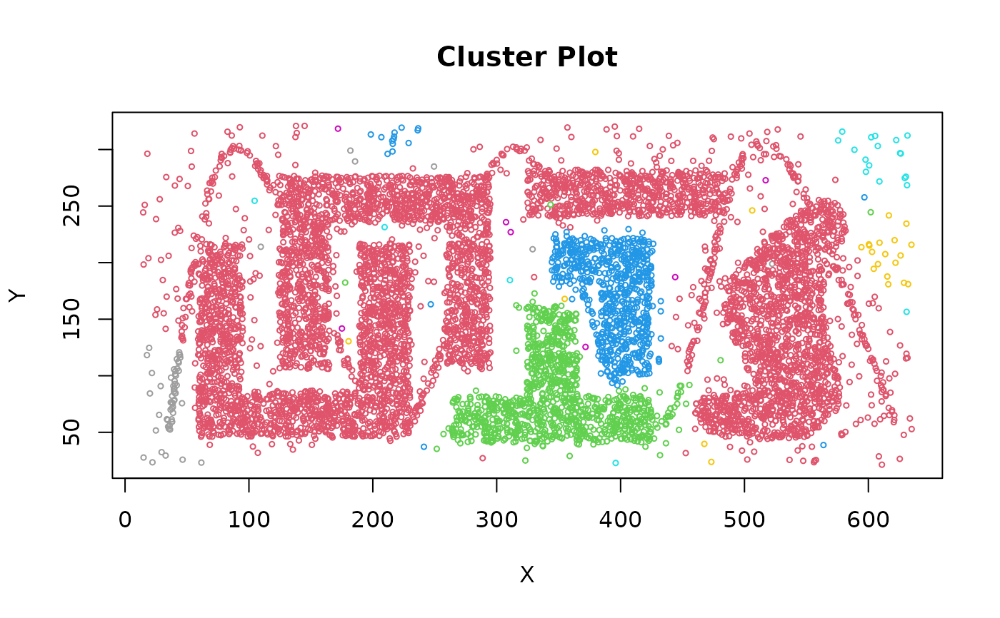
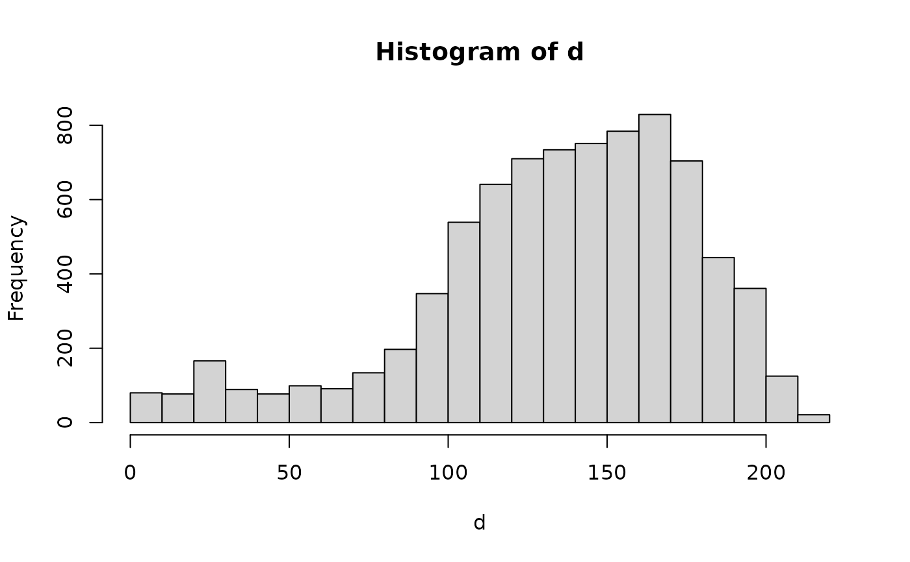
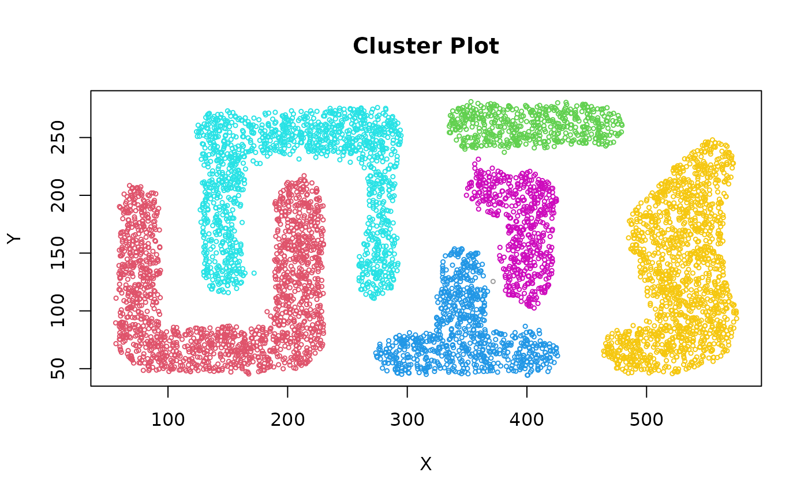

Fast C++ implementation of the Jarvis-Patrick clustering which first builds a shared nearest neighbor graph (k nearest neighbor sparsification) and then places two points in the same cluster if they are in each others nearest neighbor list and they share at least kt nearest neighbors.
Arguments
- x
a data matrix/data.frame (Euclidean distance is used), a precomputed dist object or a kNN object created with
kNN().- k
Neighborhood size for nearest neighbor sparsification. If
xis a kNN object thenkmay be missing.- kt
threshold on the number of shared nearest neighbors (including the points themselves) to form clusters. Range: \([1, k]\)
- ...
additional arguments are passed on to the k nearest neighbor search algorithm. See
kNN()for details on how to control the search strategy.
Value
A object of class general_clustering with the following
components:
- cluster
A integer vector with cluster assignments. Zero indicates noise points.
- type
name of used clustering algorithm.
- metric
the distance metric used for clustering.
- param
list of used clustering parameters.
Details
Following the original paper, the shared nearest neighbor list is
constructed as the k neighbors plus the point itself (as neighbor zero).
Therefore, the threshold kt needs to be in the range \([1, k]\).
Fast nearest neighbors search with kNN() is only used if x is
a matrix. In this case Euclidean distance is used.
References
R. A. Jarvis and E. A. Patrick. 1973. Clustering Using a Similarity Measure Based on Shared Near Neighbors. IEEE Trans. Comput. 22, 11 (November 1973), 1025-1034. doi:10.1109/T-C.1973.223640
See also
Other clustering functions:
dbscan(),
extractFOSC(),
hdbscan(),
ncluster(),
optics(),
sNNclust()
Examples
data("DS3")
# use a shared neighborhood of 20 points and require 12 shared neighbors
cl <- jpclust(DS3, k = 20, kt = 12)
cl
#> Jarvis-Patrick clustering for 8000 objects.
#> Parameters: k = 20, kt = 12
#> The clustering contains 43 cluster(s) and 0 noise points.
#>
#> 1 2 3 4 5 6 7 8 9 10 11 12 13 14 15 16
#> 6177 1008 671 1 1 18 57 1 1 13 17 2 1 1 1 1
#> 17 18 19 20 21 22 23 24 25 26 27 28 29 30 31 32
#> 1 1 1 2 1 1 1 1 1 1 1 2 1 1 1 1
#> 33 34 35 36 37 38 39 40 41 42 43
#> 1 1 1 1 1 1 1 1 1 1 1
#>
#> Available fields: cluster, type, metric, param
clplot(DS3, cl)
#> Warning: Not enough colors. Some colors will be reused.

# Note: JP clustering does not consider noise and thus,
# the sine wave points chain clusters together.
# use a precomputed kNN object instead of the original data.
nn <- kNN(DS3, k = 30)
nn
#> k-nearest neighbors for 8000 objects (k=30).
#> Distance metric: euclidean
#>
#> Available fields: dist, id, k, sort, metric
cl <- jpclust(nn, k = 20, kt = 12)
cl
#> Jarvis-Patrick clustering for 8000 objects.
#> Parameters: k = 20, kt = 12
#> The clustering contains 43 cluster(s) and 0 noise points.
#>
#> 1 2 3 4 5 6 7 8 9 10 11 12 13 14 15 16
#> 6177 1008 671 1 1 18 57 1 1 13 17 2 1 1 1 1
#> 17 18 19 20 21 22 23 24 25 26 27 28 29 30 31 32
#> 1 1 1 2 1 1 1 1 1 1 1 2 1 1 1 1
#> 33 34 35 36 37 38 39 40 41 42 43
#> 1 1 1 1 1 1 1 1 1 1 1
#>
#> Available fields: cluster, type, metric, param
# cluster with noise removed (use low pointdensity to identify noise)
d <- pointdensity(DS3, eps = 25)
hist(d, breaks = 20)

DS3_noiseless <- DS3[d > 110,]
cl <- jpclust(DS3_noiseless, k = 20, kt = 10)
cl
#> Jarvis-Patrick clustering for 6104 objects.
#> Parameters: k = 20, kt = 10
#> The clustering contains 7 cluster(s) and 0 noise points.
#>
#> 1 2 3 4 5 6 7
#> 1571 510 779 1323 523 1397 1
#>
#> Available fields: cluster, type, metric, param
clplot(DS3_noiseless, cl)
